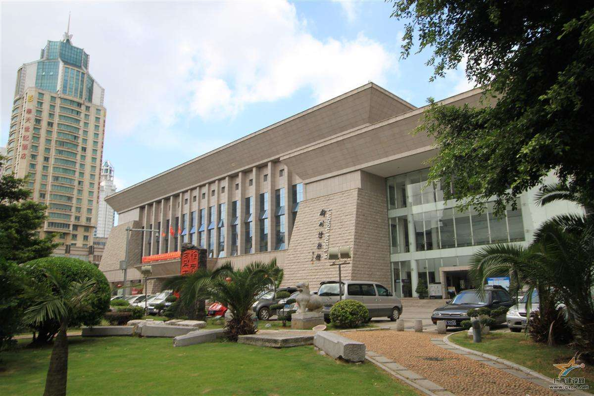
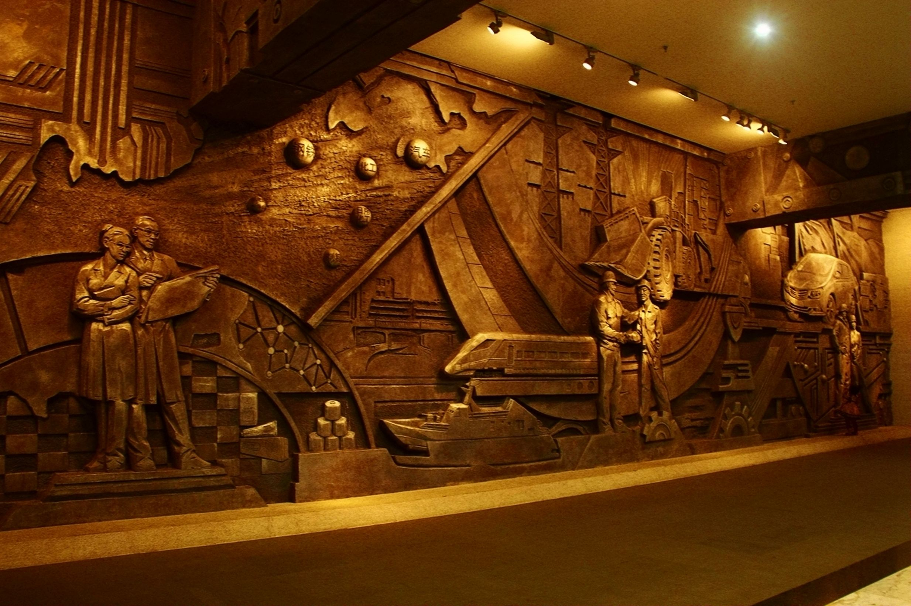
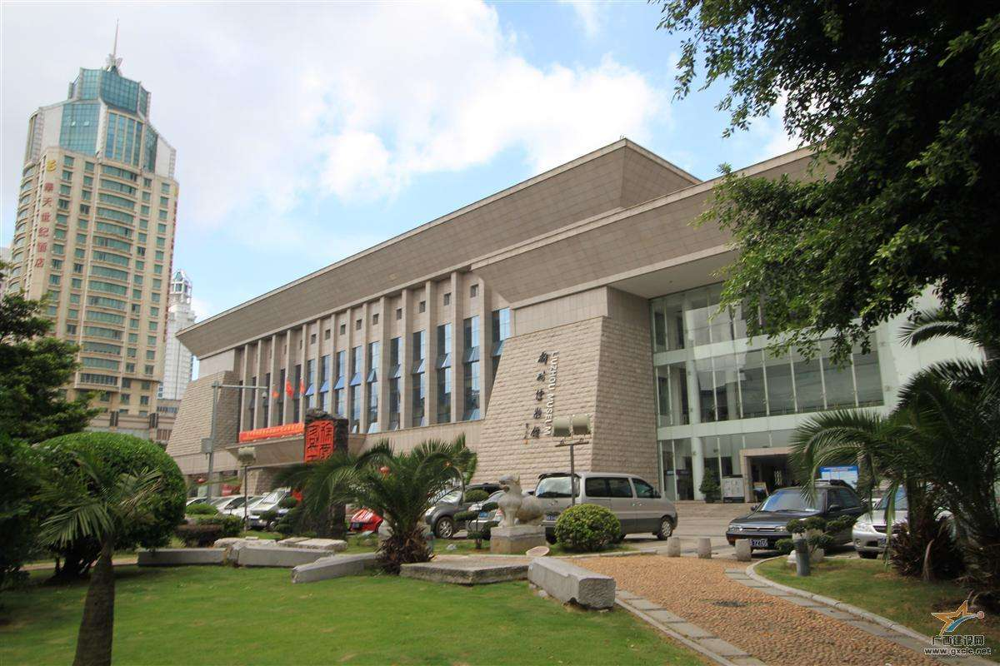
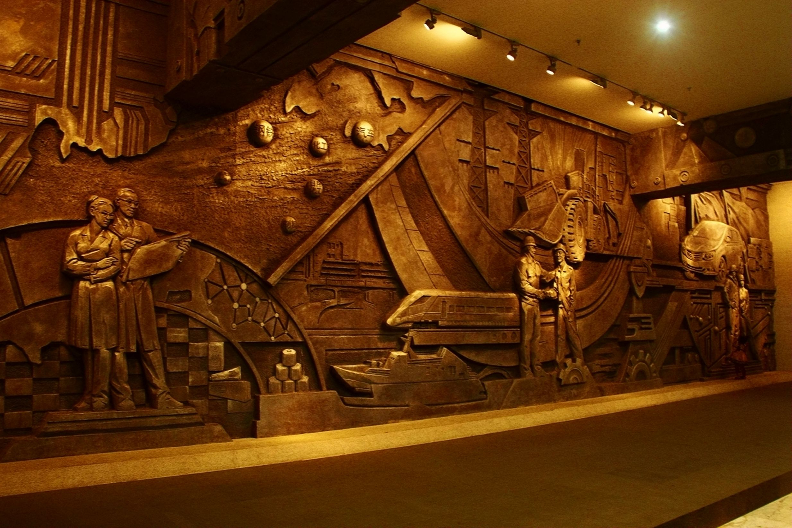

1.简介
柳州，别称壶城、龙城，是广西最大的工业城市
地处中国华南地区、广西中部偏东北，是沟通西南与中南、华东、华南地区的重要铁路枢纽，素有“桂中商埠”之称，是与东盟双向往来产品加工贸易基地和物流中转基地城市，西南出海大通道集散枢纽城市，“一带一路”有机衔接门户的重要节点和西部大开发战略中西江经济带的龙头城市和核心城市，是广西最大的工业基地，是面向东部、南部沿海和东南亚的区域性制造业城市，中国唯一同时拥有四大汽车集团整车生产基地的城市。
2.美食
螺蛳粉是广西壮族自治区柳州市的小吃米粉，具有辣、爽、鲜、酸、烫的独特风味。 [1] 是柳州最具地方特色的名小吃。
螺蛳粉的味美还因为它有着独特的汤料。汤料由螺蛳、山奈、八角、肉桂、丁香、多种辣椒、等天然香料和味素配制而成
螺蛳粉除了鲜、酸、爽、烫，辣味也是它的独特之处。它由柳州特有的软韧爽口的米粉，加上酸笋、花生、油炸腐竹、黄花菜、萝卜干、鲜嫩青菜等配料及浓郁适度的酸辣味和煮烂螺蛳的汤水调合而成，因有奇特鲜美的螺蛳汤，使人吃一想二。未尝其味先观其色便会令人垂涎欲滴，红通通的是漂浮在上面的一层辣椒油，绿油油的是时令青菜，鲜美的螺蛳汤渗透每一根粉条，螺蛳粉中的辣椒油与普通的辣不同，此种带着有侵略性的辣，嫩滑香酥得让人忘了本位。
螺蛳粉之所以叫做“螺蛳粉”，是因为它的汤是用螺蛳熬成的缘故。外地人可能不习惯螺蛳粉汤辣和腥的味道，而这恰恰是螺蛳粉最大的特色。精心熬制的螺蛳汤具有清而不淡、麻而不燥、辣而不火、香而不腻的独特风味。
地道的柳州螺蛳粉都会带着一股浓浓的奇葩的“臭”味，这股“臭”味来源于螺蛳粉里的酸笋，它是新鲜笋经工艺发酵后酸化而成的，其味道让许多人“退避三舍”，但懂得欣赏它的内涵的人，就会知道，它是香而不腐的，闻之开胃，想之流涎，吃之打滚
3.名人——柳宗元
柳宗元（公元773年—公元819年11月28日），字子厚，汉族，河东（现山西运城永济一带）人，唐宋八大家之一，唐代文学家、哲学家、散文家和思想家世称“柳河东”、 “河东先生”，因官终柳州刺史，又称“柳柳州”。
柳宗元与韩愈并称为“韩柳”，与刘禹锡并称“刘柳”，与王维、孟浩然、韦应物并称“王孟韦柳”。
柳宗元一生留诗文作品达600余篇，其文的成就大于诗。骈文有近百篇，散文论说理性强，笔锋犀利，讽刺辛辣。游记写景状物，多所寄托，有《河东先生集》，代表作有《溪居》《江雪》《渔翁》
4.景点
柳州博物馆
柳州博物馆建筑主体采用花岗岩风暴石砌筑，为古城阙样式，外廊21面浮雕，寓意21世纪的柳州和2100年的历史，反映柳州史前文明、民族民俗文化、现代文化等内容。
常设陈列有《历史馆》、《民族馆》、《青铜馆》、《扇面书画馆》、《古生物化石馆》、一个多功能活动厅和学术报告厅等，通过布景方式和不同历史时期的文物实体，再现柳州历史风貌，展示古城风采。
柳州工业博物馆
柳州工业博物馆坐落于柳州市鱼峰区文昌大桥东侧南面，毗邻阳光100CBD商务区，与窑埠古镇隔街相望，为国家AAAA级景区，也是免费向公众开放的博物馆。柳州工业博物馆集工业历史展示、工业遗产保护、科学知识普及、旅游休闲于一体，总用地面积将近11万平方米，总建筑面积超过6万平方米，设有工业历史馆、生态宜居馆等主题展馆，截止目前已征集到各类大小工业遗存实物6224件，各种文献资料、图片11645件。柳州工业博物馆于2012年5月1日建成对外开放，填补了广西工业类博物馆的空白，成为广西乃至全国第一所城市综合性工业博物馆
 


